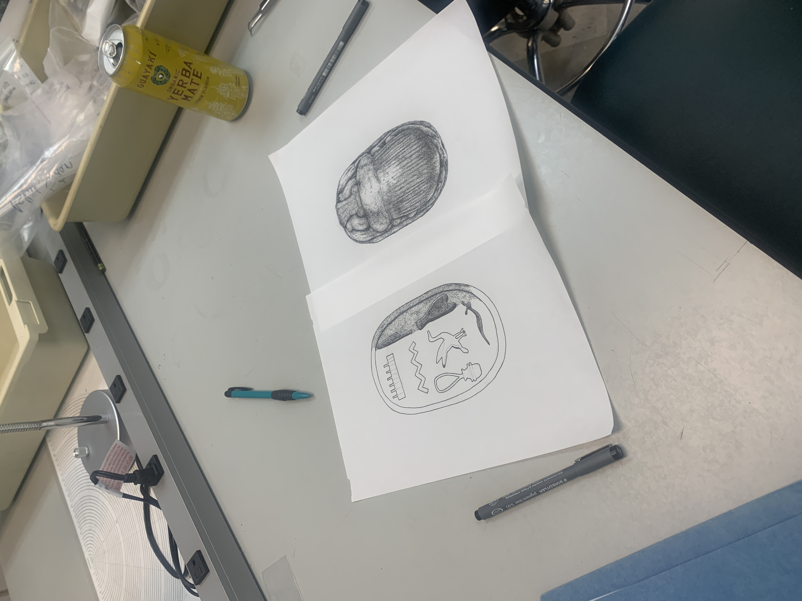
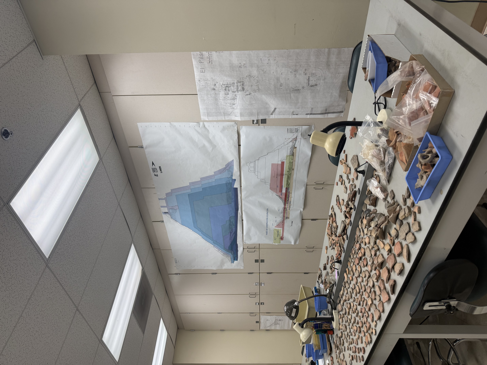

Material analysis · Biological samples
Laboratory experience
Moving between artifacts, biological samples, records, and reconstruction.
Ceramics analysis
UC Santa Barbara · January 2023–June 2026
For three years I worked in the UCSB laboratory directed by Professor Stuart Tyson Smith, which handled ceramics and other material collections from Nubian sites across northern Sudan, particularly Tombos and Askut. I carefully catalogued and stored material while adapting to current research projects, conference preparations, and interdepartmental studies.
Reconstructions, archaeological drawings, and site plans formed a large part of my role. I prepared illustrations for publications and conferences; examples of that work appear below.



Endocrinology training
UC Santa Barbara · September–December 2024
I trained in fluid sample collection and preparation, pipetting, vortex mixing, incubation, and measurement under Nicole Thompson Gonzalez, while maintaining laboratory records and datasets.
Field laboratories
At Ngogo, I prepared non-invasive samples for hormone and DNA analysis. At Cervia Vecchia, laboratory work focused on ceramic sorting and reconstruction—different workflows linked by careful handling, documentation, and repeatable procedure.